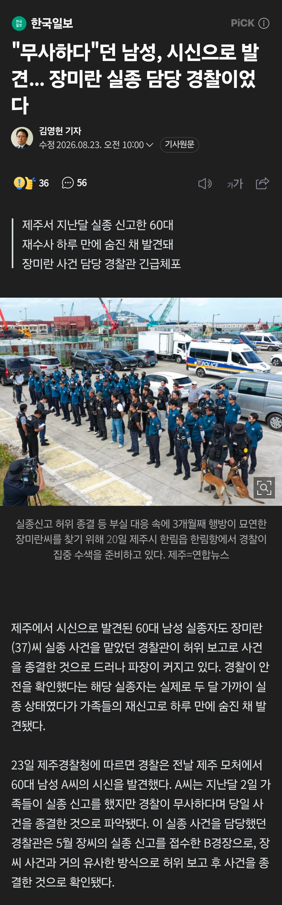

https://n.news.naver.com/article/469/0000949486?ntype=RANKING

"60대 남성 A씨도 유사한 방식으로 무사하다며 사건 종결"
"피해자 가족들의 재신고로 수사 하루만에 시신으로 발견"
뭔가 이상하고 무서워져가는데....
https://n.news.naver.com/article/469/0000949486?ntype=RANKING

"60대 남성 A씨도 유사한 방식으로 무사하다며 사건 종결"
"피해자 가족들의 재신고로 수사 하루만에 시신으로 발견"
뭔가 이상하고 무서워져가는데....
댓글
수집 당시 댓글 31개
일하기싫어요 · 1 일 전
10년전 경찰 시작한 사람이 승자네
신두 · 18 시간 전
10년전에 공무원 열풍 불때 경찰 지원한 사람들도 많았지
장송의프리렌 · 1 일 전
60대 남성은 타살 혐의점이 없다고 하긴 하네 유가족이 사망경위나 사인을 언론에 공개하는걸 원치 않는다고 하네
꼴뚜기별의왕자 · 1 일 전
제주는 이제 신안이네
커스터마이즈 · 1 일 전
뭐야 이게 ㅅㅂ 간첩이야?
말더듬이 · 1 일 전
지금이라도 초토화작전 재개해라
착한생각 · 1 일 전
이제 저 경찰 자살이나 의문사 당하면 진짜 큰 일인 거임.
하두구루부 · 1 일 전
ㄴㄴ 죄책감에 극단적 선택 이러고 끝임
착한생각 · 1 일 전
얼마나 덮을 게 많으면 개인 일탈과 그에 따른 죄책감으로 사건을 마무리 하냐고오!!!
1486504 · 1 일 전
인신매매면 시체가 발견 안되야 하는거 아님? 시신에 훼손 흔적(장기 적출 등) 없는지 먼저 봐야할 듯.. 성범죄 후 살해 + 은폐 위한건가 했는데 60대 남성까지 관련되어 있으면 진짜 귀찮아서, 혹은 개인의 일탈이 아닌 조직범죄에 연루 이 쪽일듯
HD20 · 1 일 전
ㄴㄴ 범죄자들이나 사기꾼들은 이런 일반 상식을 역이용함. '이렇게 들킬건데 범죄(사기)를 저지른다고?' 하는 그 틈새를 이용하는게 그 개새끼들이고 또 완전범죄 저지를만큼 능력도 지능도 높지 않음. 범죄연루 충분히 가능성 있어보임
1486504 · 1 일 전
개무섭 ㅠㅠ
부스터팩 · 20 시간 전
피 빨아가는거면 시체가 발견되는게 오히려 다른 의심 안받을듯
눈팅13 · 1 일 전
순찰 좀 빡세게 도니까 바로 시신 나오는거면 진짜 시발 수사자체를 안한거 아님?
눈팅만30년 · 1 일 전
제주도의 신안화 이미 시작된거냐
IiIiiIiIIi · 1 일 전
신안은 양반인데? ㅋㅋㅋㅋ
인도의일찍일어나는새 · 1 일 전
그래도 신안이랑은 못비비지
살쪄서숨쉬기힘든애 · 1 일 전
신안은 찾지도 않음
블랙올리브 · 1 일 전
신안은 살려는준다고
1486504 · 1 일 전
남자선생님을 기억해줘 ㅠㅠ
블랙올리브 · 1 일 전
그거치정어쩌구자살아님?
옛계정은어디갔나몰라 · 1 일 전
그 뒤에 죽은 게 몇일까...
마곡엠밸리710동박금석 · 1 일 전
신안은 이름이랑 같이 세상에 존재하지 않았던 사람으로 만들어줌 ㅋㅋㅋ 남교사가 여선생보고 섬사람 조심하라고 했다가 섬 외딴곳에 백골상태로 발견
어떤곰 · 20 시간 전
그거 추측이라함 남교사있던섬이랑 여교사섬하고 70km떨어져있다는듯 애매한거 말하면 역으로 공격당할수있음 미국이 신안 염전노예로 조사했다나 노예굴리는 섬이라고 까
제로제로 · 23 시간 전
신안이었으면 시체조차 못건지고 아무일도 없었다행임 마을사람부터 ㅇㄱㄸ까지 전부 엮인 동네인데 ㅋㅋ
진정한이시대의야인 · 22 시간 전
물고기들이 먹어서 없어요
년도가입 · 1 일 전
일단 희대의 사건이긴하다
불멸의러너 · 1 일 전
ㄷㄷㄷㄷㄷㄷㄷ
배틀드립 · 1 일 전
혼날 시간입니다. 한 10년 반성시키고 싶네.
어라라라 · 1 일 전
이제저기서 저 경찰이 범인이면 ㅋㅋ
건강이최고양 · 1 일 전
전국으로 확대해서 전수조사해야된다. 절대 일부만의 일이 아닐것임. 다른지역 실종자가 월등하게 더 많음. https://www.donga.com/news/Politics/article/all/20190924/97562946/1